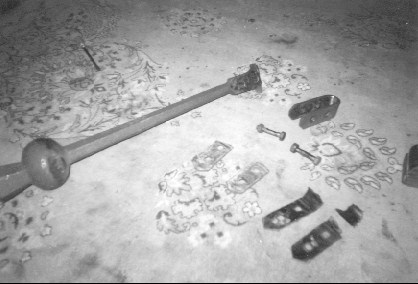

| 1855 |
A new tower was designed and built. The
architect was P.C. Harwick Esq. |
| 1874 |
A new ring of eight bells was cast and hung by Mears
and Stainbank. The first peal on the bells was rung by the
'crack' band of 19th century College Youths. |
| 1888 |
The Society of Trinity Youths which had originally
been established in 1782, and had fallen into abeyance was
re-established at a meeting held in the tower of St Alphege,
Greenwich on Tuesday April 17th 1888. Messr's Smith, Dyer and
Pead who were the sole surviving members of the original company
residing in the neighbourhood elected several new members and
officers afterwards elected. See History. Several
peals were rung and practices held in the name of this Society at St
John's. |
| 1890's |
When the Kent County Association formed itself into
districts, an offer was made to the Trinity Youths to merge their
Company into a District which would be called the Trinity Youths
District. The offer was declined, and the Trinity Youths
gradually faded away. |
| 1880 - 1939 |
It seems likely that, from the comprehensive library
contained in the tower of the Bell News, and later the Ringing
World, there was a regular band between these dates. An
Ellacombe chime mechanism was also installed in the late 1880's by
John Warner & Son. |
| 1945 - 1980 |
It seems as though a local band continued to
ring at Deptford for most of this period too. For some
while in the 1970's the bells were seriously overused for peals;
usually of Surprise Major. |
| 1985 |
The bells having been silent for some time, an attempt
was made to teach a local band. In the event this was very
successful, and this band continued for a few years. After
this the Kensington ringers added the tower to their route for a
while. |
| 1990's |
Very little ringing on the bells |
| 2000 |
Mr C.J. Cooper inspected the tower and bells.
There was about £15 in the bell fund which was used to buy two new
panes of glass for the handbell cabinets. The handbells, now
locked away in a safe away from the tower, the space left was used
for storing the many volumes of the Bell News and Ringing World.
The bearings of the bells (which like all Bowells bearings have
lasted incredibly well in spite of the lack of maintenance) were
'flushed out'. The real
trouble however is that the lack of maintenance means that the
clappers drift from one side of the bell to the other in some
cases. |
| 2001 |
On August 3rd a Quarter Peal of Grandsire Triples was rung on the
bells (the first for some time) to mark the 101st birthday of H.M.
The Queen Mother. Mr Cooper rang the 7-8 'double-handed', and
the method was Grandsire Triples. |
| 2003 |
The clappers of 3, 5 & 7 were drifting from one
side of the bells to the other, sometimes hitting the wheels during
ringing. This unacceptable state of affairs was rectified by C.J.
Cooper, and just in time, as the leathers on these clapper hoops had
worn right through. These leather 'baldricks' were replaced by Mr
Cooper, thus saving some very expensive damage which would have occured
in time to both the wheels, clapper hoops, and possibly the bells if
the clappers had torn out during a ringing session.

Pictured
is one of the clappers with it's hoop and worn leathers from its
clapper and that of another bell. Note the shiny area inside the
hoop which was well worn. The work carried out by Mr Cooper will
clearly last for many years, and is common sense - but this still did
not stop individuals of the Kent County Association of Changeringers
(wearing the usual 'personal vendetta' hat) from rubbishing the work
carried out - then promptly holding a district Meeting there. We
leave it to you, dear reader to work the logic in that!
|